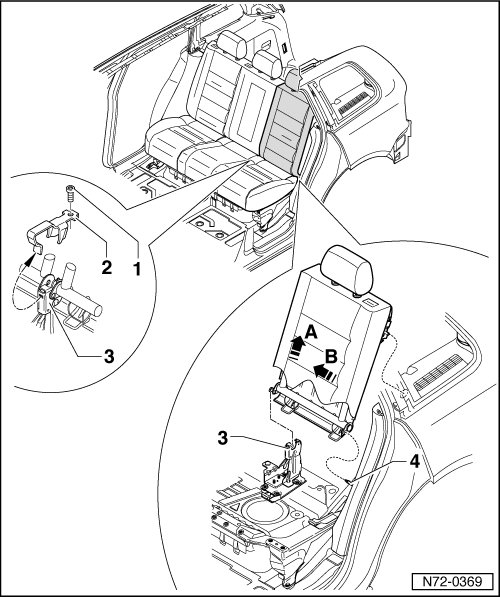

Left Seat Backrest
Rear Seats
Left Seat Backrest
Removing
- Fold down rear backrests.
- Remove bolt - 1 - from backrest mounting - 3 - (16 Nm) and remove clip - 2 -.
- Remove left backrest upward out of backrest mounting - arrow A - and pull off of pin - 4 - - arrow B -.

Installing
- Perform the steps used for removal in reverse order.